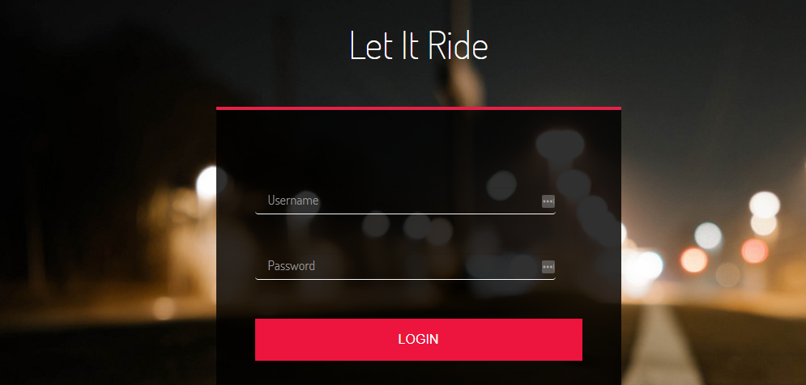
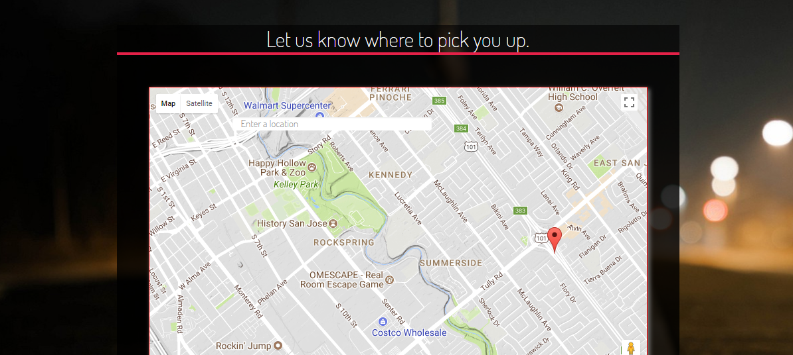
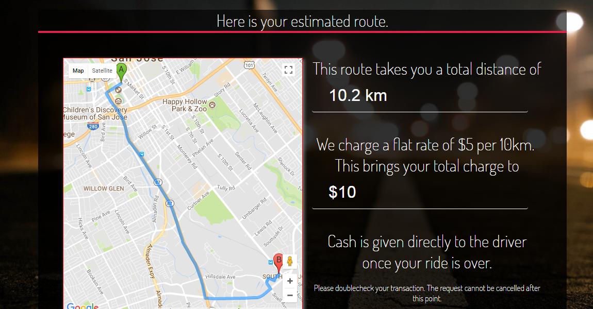

Let it Ride
What is it?
Let it Ride is a mock ride sharing service based off of popular services Lyft and Uber that attempts to fully imitate all of the major service application functionalities. From basic account management (login/logout, sign up, administrative/driver accounts, account information management), to service request queueing, driver to user interaction, and many more.

Successfully implemented through a Model View Controller type design built under a MEAN stack (MongoDB, ExpressJS, AngularJS, and NodeJS), our service was built with clean code practices and code purpose segregation. Our team of four: Alvyn Ly (me!), Akuang Saechao, Kata Ota, and Jamahl Reynolds were able to cleanly distribute responsibilities to provide for the foundation of the site.

Agile methodologies were the primary driving factor in our quick, efficient, and concise ability to reach goals, all of which include these some of many:
- Front to Back end interaction - building the foundation for data management and storage.
- UI/UX - Building the site design from the ground up, with concepts such as Responsive Web Design and Mobile First Approach.
- Google Maps API Integration - Whats a ride sharing service without a functional map? Live data feed of user and driver position provided side by side on virtually exclusive machines.
- Full account management and services - User and Driver accounts came fully equipped with a dual-sided reviewing service and ride/service history.
